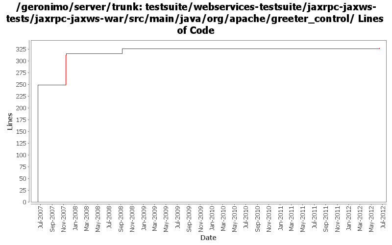

[root]/testsuite/webservices-testsuite/jaxrpc-jaxws-tests/jaxrpc-jaxws-war/src/main/java/org/apache/greeter_control

| Author | Changes | Lines of Code | Lines per Change |
|---|---|---|---|
| Totals | 11 (100.0%) | 334 (100.0%) | 30.3 |
| gawor | 10 (90.9%) | 333 (99.7%) | 33.3 |
| xuhaihong | 1 (9.1%) | 1 (0.3%) | 1.0 |
GERONIMO-6363 Correct the WebMethod annotation, as the mapping rule changed in new JAX-WS spec
1 lines of code changed in 1 file:
added missing apache headers
18 lines of code changed in 1 file:
fix failing tests
3 lines of code changed in 1 file:
updated tests with new understanding of SEI override
59 lines of code changed in 2 files:
updated tests for GERONIMO-3602 but one of the tests is disabled for now
4 lines of code changed in 2 files:
test case to test jaxrpc web services within javaee webservices.xml file
249 lines of code changed in 4 files: